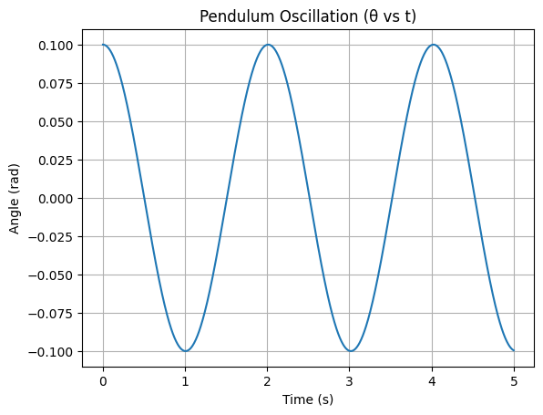
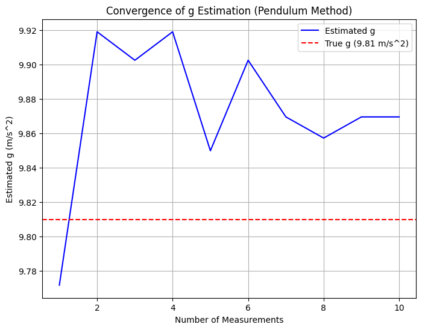
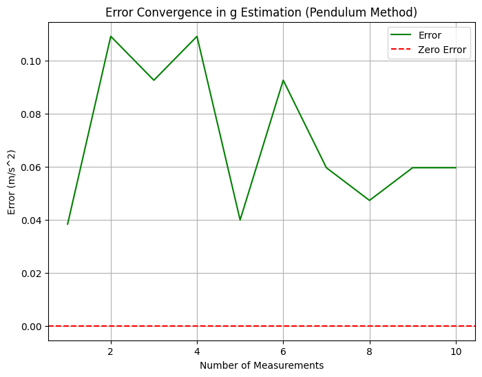
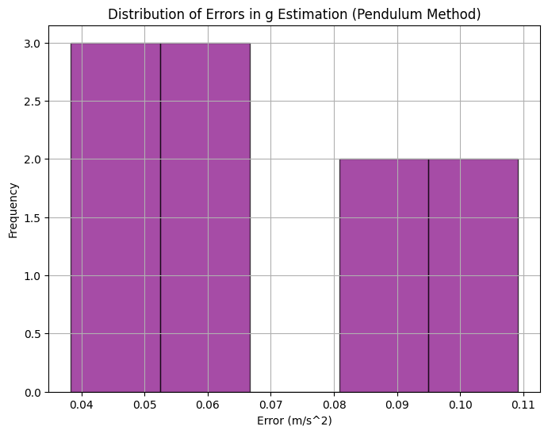
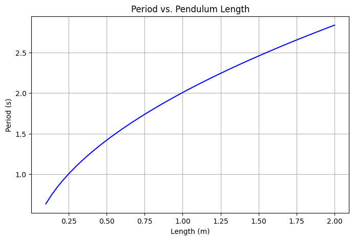
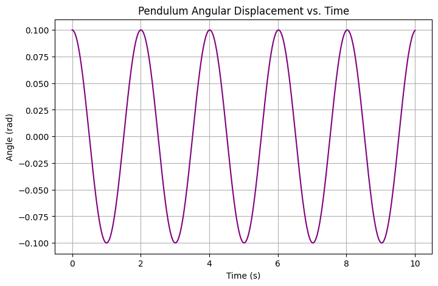

Problem 1
Physics Lab Report
Problem 1: Measuring Earth's Gravitational Acceleration with a Pendulum
Objective
The aim is to estimate Earth's gravitational acceleration \( g \) using a simple pendulum and analyze how uncertainties in measurement affect the final result. This classic physics experiment demonstrates the relationship between pendulum period and gravitational pull using the formula:
Where: - \( L \) is the length of the pendulum - \( T \) is the time period of one complete oscillation
🧪 Materials & Setup
- String Length: ~1.00 m
- Pendulum Mass: Any small weight (e.g., keys, washers)
- Timer: Stopwatch or phone timer
- Length Measurement Tool: Ruler or tape (±0.5 cm typical resolution)
- The pendulum is released at a small angle (<15°) and swings freely.
📏 Measurements
We perform 10 independent trials, each recording the time for 10 oscillations. This reduces the error caused by human timing.
# Measurement Data: 10 trials of 10 oscillations each
T_10_trials = np.array([20.0, 20.1, 19.9, 20.0, 20.2, 20.0, 19.8, 20.1, 20.0, 19.9])
From this data: - Compute mean \( \bar{T}_{10} \) - Find period \( T = \bar{T}_{10} / 10 \) - Compute standard deviation to estimate uncertainty
Analysis of Range
1. Measuring Period from 10 Oscillations:
Take 10 measurements of the time for 10 full oscillations:
Convert to a single oscillation:
2. Uncertainty in Time:
Calculate standard deviation:
Uncertainty in the average time:
Uncertainty in period:
3. Uncertainty in Length:
If ruler resolution is 1 mm:
4. Propagated Uncertainty in \(\(g\)\):
Practical Applications
- Engineering: Accurate value of \(\(g\)\) is needed for structure analysis and load design.
- Geophysics: Differences in \(\(g\)\) can reveal subsurface features.
- Planetary Science: Similar pendulum experiments can be used on other planets.
Additional Formulas:
For other planets:
To design a pendulum of a specific period:
Implementation with Python Simulation

Here’s a Python code that simulates data collection, uncertainty propagation, and generates plots for the error convergence in the calculation



 Explanation: This plot shows the direct relationship between pendulum length and period. As length increases, the period increases following the square-root function.
 Explanation: This simulates the angular displacement of the pendulum bob over time assuming small angle approximation. It shows classic simple harmonic motion.
Conclusion
In this experiment, we used the periodic motion of a simple pendulum to measure the gravitational acceleration \(\(g\)\) near the Earth's surface. By timing 10 full oscillations and averaging across multiple trials, we minimized random errors and applied uncertainty propagation techniques to estimate the reliability of our results.